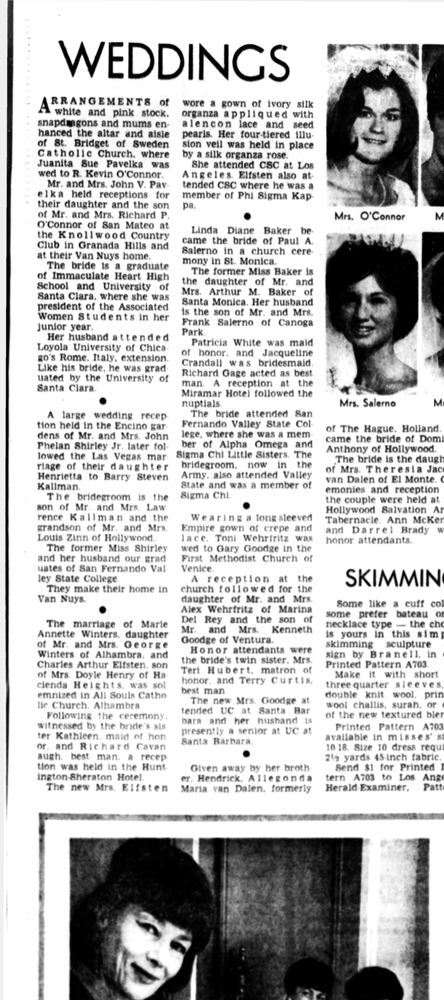

Marie A. Winters b. 1947
Wife of Peter's first cousin once removed Charles A. Elfsten.
Living. As for every living relative on this site, the birth date is given by year only, and no current address is shown.
Marie A. Winters was born in 1947 (according to the family's 2015 tree)1. She married Charles A. Elfsten on 17 Sep 1966 in Alhambra, California, United States3,4.
Family
- Husband
- Charles A. Elfsten b. 1943 · married on 17 Sep 1966 in Alhambra, California, United States
- Children
- William Elfsten b. 1968 documented
- Kathleen S. Elfsten b. 1970 documented
Life events
| Event | Date | Place and details |
|---|---|---|
| Born | 1947 | According to the family's 2015 tree1 |
| Education | 9 Oct 1966 | Los Angeles, California, United States Daughter of Mr. and Mrs. George Winters of Alhambra, California (with sister Kathleen Winters); attended California State College at Los Angeles before marrying Charles Arthur Elfsten at All Souls Catholic Church, Alhambra.2 |
Records


Sources
- Peter's tree, danenberg.sql, 2007–2015, personae 156, birth.
- Wedding Announcement: Elfsten-Winters, Los Angeles Herald Examiner (Los Angeles, California), 9 October 1966, p. 106.
The marriage of Marie Annette Winters, daughter of Mr and Mrs Oeorge Winters of Alhambra and Charles Arthur Elfsten son of Mrs Dovle Henry of Ha cienda Heights, w as sol emnized in All Souls Catho He C'hurrh Alhambra ... She attended CSC at Los Angeles
Translation: The marriage of Marie Annette Winters, daughter of Mr. and Mrs. George Winters of Alhambra, and Charles Arthur Elfsten, son of Mrs. Doyle Henry of Hacienda Heights, was solemnized in All Souls Catholic Church, Alhambra ... She attended CSC at Los Angeles.
Daughter of Mr. and Mrs. George Winters of Alhambra, California (with sister Kathleen Winters); attended California State College at Los Angeles before marrying Charles Arthur Elfsten at All Souls Catholic Church, Alhambra.
- Peter's tree, danenberg.sql, 2007–2015, unions 56, inauguration.
- Wedding Announcement: Elfsten-Winters, Los Angeles Herald Examiner (Los Angeles, California), 9 October 1966, p. 106.
The marriage of Marie Annette Winters, daughter of Mr and Mrs Oeorge Winters of Alhambra and Charles Arthur Elfsten son of Mrs Dovle Henry of Ha cienda Heights, w as sol emnized in All Souls Catho He C'hurrh Alhambra Following the ceremony, witnessed bi the hndr » sis ter Kathleen maid ot hon or and Richard Cavan augh. best man a rerep tion was held in the Hunt ingtonBheraton Hotel The new Mrs Elfsten wore a gown of ivory silk organza appllqued with a 1 e n c o n lace and seed pearls. Her four tiered tllu sion veil was held in place by a silk organza rose She attended CSC at Los Angeles Elfsten also at tended CSC where he was a member of Phi Sigma Kap pa.
Translation: The marriage of Marie Annette Winters, daughter of Mr. and Mrs. George Winters of Alhambra, and Charles Arthur Elfsten, son of Mrs. Doyle Henry of Hacienda Heights, was solemnized in All Souls Catholic Church, Alhambra. Following the ceremony, witnessed by the bride's sister Kathleen, maid of honor, and Richard Cavanaugh, best man, a reception was held in the Huntington-Sheraton Hotel. The new Mrs. Elfsten wore a gown of ivory silk organza appliqued with Alencon lace and seed pearls. Her four-tiered illusion veil was held in place by a silk organza rose. She attended CSC at Los Angeles. Elfsten also attended CSC, where he was a member of Phi Sigma Kappa.
Married Marie Annette Winters (daughter of Mr. and Mrs. George Winters of Alhambra; attended California State College at Los Angeles) at All Souls Catholic Church, Alhambra, California, followed by a reception at the Huntington-Sheraton Hotel; witnessed by the bride's sister Kathleen Winters as maid of honor and Richard Cavanaugh as best man; Charles Arthur Elfsten (son of Mrs. Doyle Henry of Hacienda Heights) also attended California State College at Los Angeles, where he was a member of Phi Sigma Kappa.